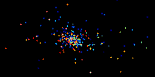

Starlab: A Software Environment for Collisional Stellar Dynamics
Piet Hut (IAS), Steve McMillan (Drexel U.), Jun Makino (U. Tokyo),
Simon Portegies Zwart (U. of Amsterdam)

Welcome to Starlab
Starlab is a software package for simulating the evolution of
dense stellar systems and analyzing the resultant data. It is a
collection of loosely coupled programs (``tools'') linked at the level
of the UNIX operating system. The tools share a common data structure
and can be combined in arbitrarily complex ways to study the dynamics
of star clusters and galactic nuclei.
Starlab features the following basic modules:
- Three- and four-body automated scattering packages, constructed
around a time-symmetrized Hermite integration scheme.
- A collection of initialization and analysis routines for use with
general N-body systems.
- A general Kepler package for manipulation of two-body
orbits.
- N-body integrators incorporating both 2nd-order leapfrog and
4th-order Hermite integration algorithms.
- Kira, a general N-body integrator incorporating
recursive coordinate transformations, allowing uniform treatment of
hierarchical systems of arbitrary complexity within a general N-body
framework (versions 2.1 and above).
- SeBa, a stellar and binary evolution package, allowing
to follow in time the evolution of any star or binary from arbitrary
start conditions. The package is fully implemented within kira in a
comprehensive and transparent fashion (versions 3.0 and above).
A novel aspect of Starlab is its very flexible external data
representation, which guarantees that tools can be combined in
arbitrary ways, without loss of data or internally-generated
comments. Thus, two tools connected by UNIX pipes may operate on
different portions of the same data set, even though neither
understands the data structures, or even the physical variables, used
by the other. Unknown data are simply passed through unchanged to the
next tool in the chain.
This document briefly outlines the basic components of Starlab,
describes how to obtain and install the software, and provides
information on the use and internal organization of the major parts of
the package.
Starlab presentation by Steve McMillan at MODEST-5c: PDF version, OpenOffice version, HTML version.

Please send any comments or suggestions to
starlab (at) sns.ias.edu